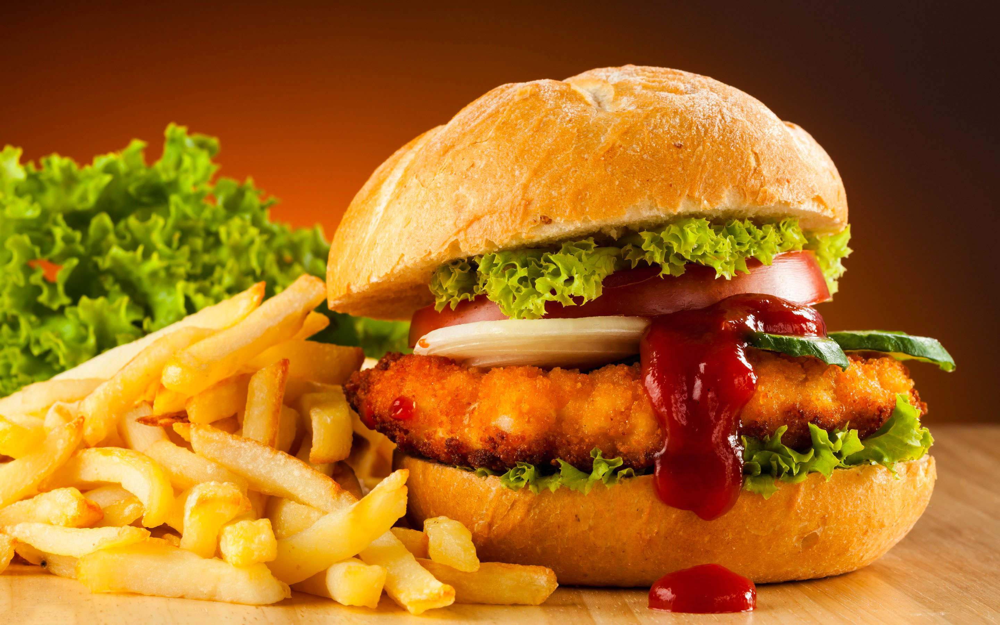
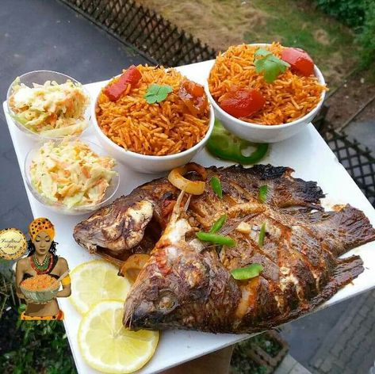
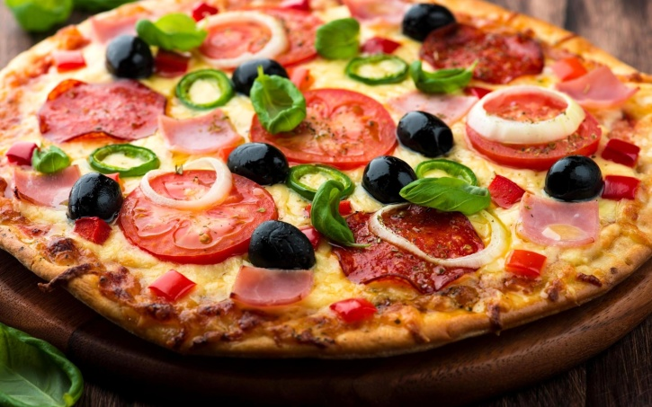

TOUT
IMAGES
VIDEOS
CARTES
ACTUALITES
filtre adulte:
strict
modéré
desactivé
filtre
taille de l'image
couleur
type
orientation
personne
Nourriture
chat
nourriture
fasfood
Nourriture
africaine

italie
nourriture
Nourriture
française
bonne
Nourriture
Nourriture
colorier
Nourriture
anglaise
Nourriture
PNG
Wallpapers Nourriture Allemande - MaximumWall
Télécharger fonds d'écran nourriture gratuitement
J’ai mangé de la nourriture pour animaux - URBANIA
la nourriture bio, bonne pour la santé? -pieuvre.ca
Télécharger fonds d'écran nourriture gratuitement
Aliments nourriture assortis en lot de 48 en Plastique soufflé...
Nourriture - Page 29
Délices culinaires - la nourriture asiatique en 80 photos délicieuses ...
Télécharger fonds d'écran nourriture gratuitement
Nourriture déshydratée : Quels avantages ? - Devenir survialiste

 Nourriture chat
Nourriture chat Wallpapers Nourriture Allemande - MaximumWall
Wallpapers Nourriture Allemande - MaximumWall Télécharger fonds d'écran nourriture
gratuitement
Télécharger fonds d'écran nourriture
gratuitement la nourriture bio, bonne pour la
santé? -pieuvre.ca
la nourriture bio, bonne pour la
santé? -pieuvre.ca Télécharger fonds d'écran nourriture gratuitement
Télécharger fonds d'écran nourriture gratuitement Aliments nourriture assortis en lot de 48 en Plastique soufflé...
Aliments nourriture assortis en lot de 48 en Plastique soufflé... Nourriture - Page 29
Nourriture - Page 29 Télécharger fonds d'écran nourriture gratuitement
Télécharger fonds d'écran nourriture gratuitement Nourriture déshydratée : Quels avantages ? - Devenir survialiste
Nourriture déshydratée : Quels avantages ? - Devenir survialiste